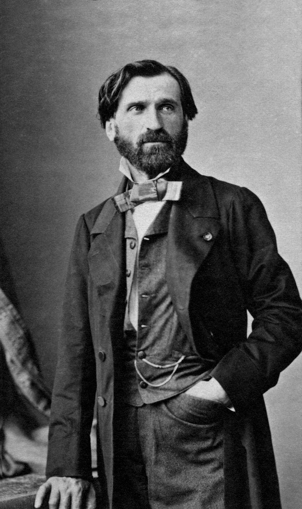

Verdi
Giuseppe Verdi bol taliansky skladateľ, ktorý sa stal jedným z najvýznamnejších a najvplyvnejších autorov opery v histórii hudby. Narodil sa 10. októbra 1813 v Le Roncole (vtedy súčasť Cisalpinskej republiky, dnes Taliansko) a jeho kariéra sa rozprestiera po veľkej časti 19. storočia. Verdiho hudba, známa svojou emocionálnosťou, silnými melodickými linkami a dramatickým vyjadrením, mala obrovský vplyv na vývoj opery a hudby vôbec. Verdi začal svoju kariéru v mladom veku, ale naozaj sa preslávil až po vydaní opery „Nabucco“ (1842), ktorá sa stala okamžitým hitom a urobila z neho národného hrdinu v Taliansku počas obdobia Risorgimenta (procesu zjednotenia Talianska). Opera Nabucco obsahuje slávnu „Chór otrokov“, ktorá sa stala symbolom talianskeho národného obrodenia. Medzi jeho najznámejšie opery patrí „La Traviata“, „Aida“, „Rigoletto“, „Il Trovatore“ a „Don Carlo“. Tieto diela sa vyznačujú vynikajúcou dramatickou konštrukciou, bohatými orchestrálnymi partitúrami a silnými, nezabudnuteľnými melódiami. Verdiho opery často zachytávajú veľké ľudské emócie – lásku, zrad, pomstu, túžbu po moci – a jeho postavy sú často plné vnútornej rozporuplnosti, čo dodáva jeho dielam hlbokú psychologickú hĺbku. Počas svojej kariéry Verdi neustále experimentoval s formami a orchestráciou, čím posúval hranice tradičnej opery. V neskorších rokoch života skomponoval aj svoj jediný requiem, „Messa da Requiem“, ktoré sa považuje za jedno z jeho najväčších majstrovských diel. Verdi zomrel 27. januára 1901 v Miláne. Jeho hudba pretrváva dodnes a je neodmysliteľnou súčasťou operného repertoáru. Verdiho diela sa stále často uvádzajú na celom svete a sú považované za pilier klasickej hudby.
Späť na hlavnú stránku